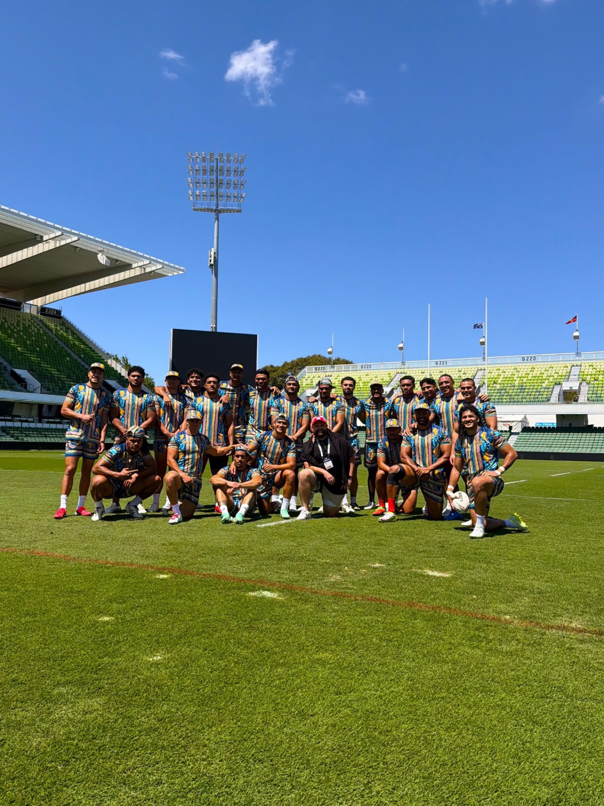
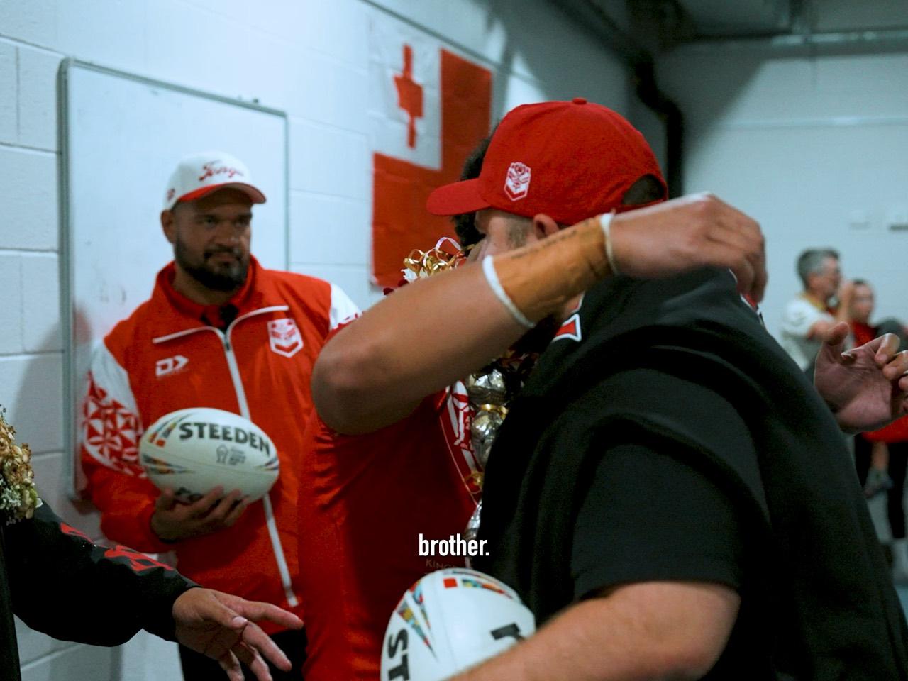
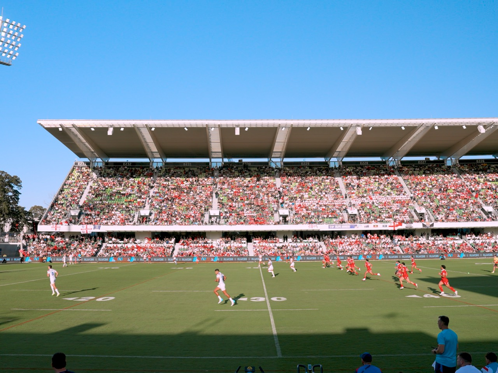

Embedded with Mate Ma'a Tonga for the 2026 Rugby League World Cup, with Rugby League Guru: game days, the players, the fans and the Red Sea.
Project 08 / 08Over 30 days of Tonga's 2026 World Cup campaign, Centre House worked alongside Rugby League Guru to produce embedded, all-access content inside the Mate Ma'a Tonga camp: game-day postcards, post-match films, the players off the field and the “Red Sea” of fans in the stands.
We shot, cut and delivered fast, so the content landed while the moment was still live. It became the engine of the Guru's biggest month ever: 44 Tonga posts drove 10.6 million views and more than 450,000 interactions, and Tonga content accounted for 73% of views across tracked posts.
Most of that audience was new. Views from people who didn't yet follow the account rose 159.8% month on month, and the Guru added 4,525 followers in 30 days, 59% of all its follower growth across the previous six months.


